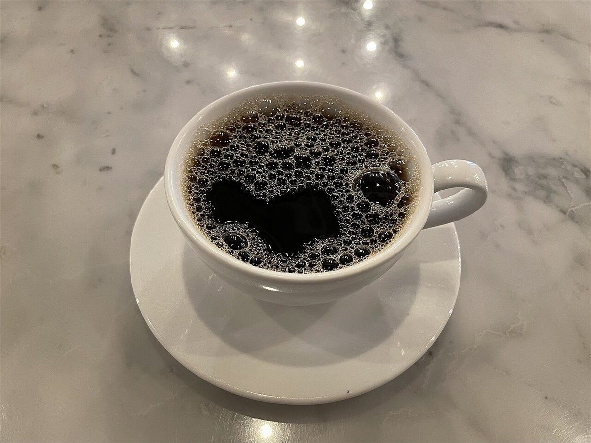
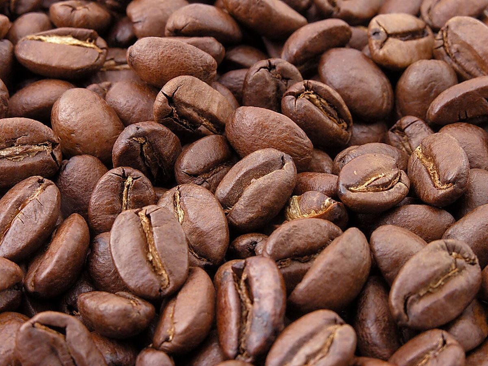

Bull's-eye = 50 / カフェ
50カフェ
ゴジュウカラ
滋賀県大津市にあるカフェ「ゴジュウカラ」のご案内ページです。営業時間やメニューなど、詳しいことは準備中。まずはInstagramをのぞいてみてください。
制作側の連想
「ゴジュウ」から、的の真ん中の50点へ
屋号の由来は分かりません。制作側は「ゴジュウ」という響きから、数字の50を連想しました。ダーツの的では、いちばん真ん中の「ブル」が50点です。そこでこのサイトは、的の円と得点の数字をモチーフにしています。お店の理念・由来とは無関係な、制作側の連想です(お店でダーツを楽しめるという意味でもありません)。
得点の読み方
ブル・トリプル・ダブル、そして外側の数字
各ページを、的の輪になぞらえて並べました。丸の中の数字や記号は、ページの目印です。

ブルの一枚(イメージ)
真ん中を、真上から。
的の中心にならって、円い器を真上から写したフリー素材を置きました。実際のお店のものではなく、提供内容を示すものでもありません。
シングルの6枚(イメージ)
外側へ広がる、ものの質感
丸く切り抜いた写真に、的の数字(20・1・18…と並ぶ順番)を添えています。写真の内容はお店のものではありません。
- 20

ガラス玉 - 1

石の天板と白いカップ - 18

皿いっぱいのクッキー - 4

焙煎豆のアップ - 13

クロワッサン - 6

ねじった形のパン
ご案内
お店のこと(確認できたものだけ)
| 所在地 | 〒520-0043 滋賀県大津市中央2丁目3-15 |
|---|---|
| 電話 | 077-500-9947 |
| 営業時間 | 準備中 |
| 定休日 | 準備中 |
| ご予約 | 準備中 |
| 駐車場 | 準備中 |
| SNS | Instagram @gojukara50 |